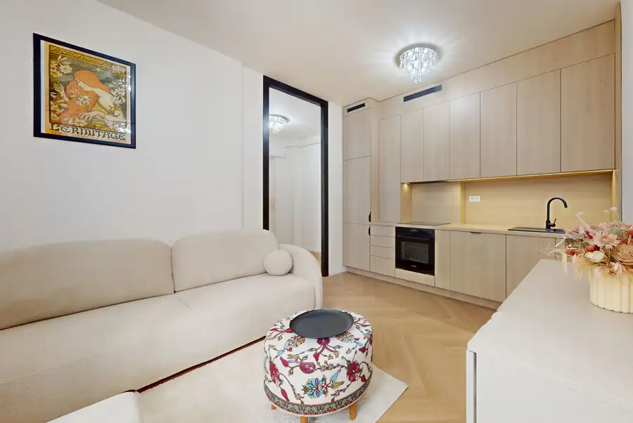
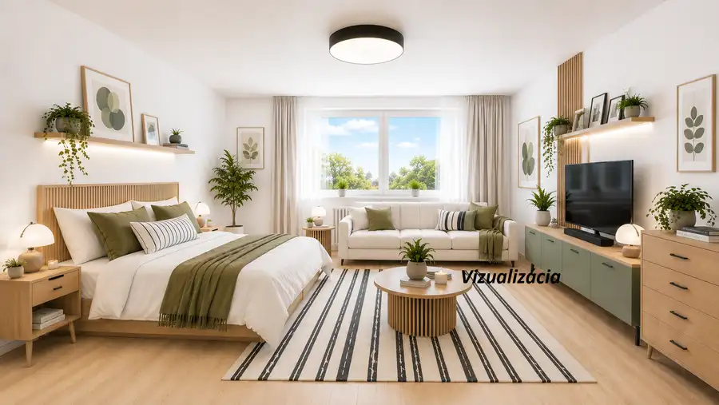
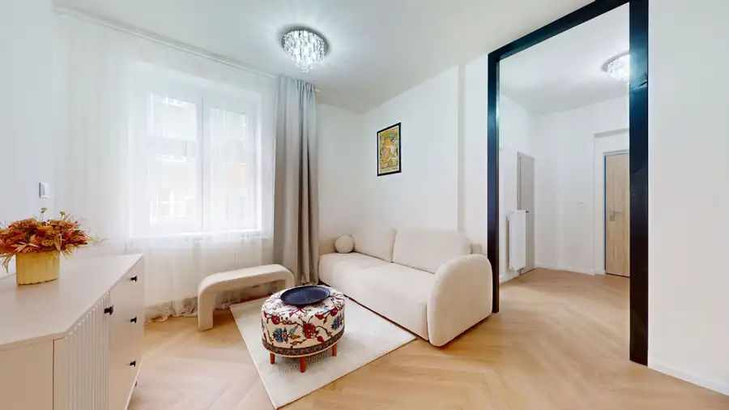

AJ INVESTIČNE! Priestranný klimatizovaný 2-izbový byt s loggiou a balkónom na ul. Narcisová, Ružinov – Trávniky
Ružinov, Bratislava
- Dispozícia2-izbový
- Plocha57.85 m²
- Poschodie6. z 9
- StavKompletná rekonštrukcia
- Energetická triedaB
O nehnuteľnosti
V prípade kúpy na investičný účel sú v byte momentálne usadení veľmi slušní nájomníci s možnosťou plynulého pokračovania v prenájme. Ak hľadáte nehnuteľnosť na vlastné rodinné bývanie, je možné dohodnúť flexibilnú lehotu na skončenie súčasného nájmu podľa potrieb nového majiteľa.Zrekonštruovaný 2-izbový byt na Narcisovej ulici vo vyhľadávanej a tichej lokalite bratislavského Ružinova. Byt sa nachádza na 6. poschodí z 9. V rámci rekonštrukcie bytu boli kompletne vymenené rozvody elektroinštalácie za medené, kuchynská linka so vstavanými spotrebičmi (keramická varná doska, elektrická rúra na pečenie, digestor, umývačka riadu). Veľkým benefitom interiéru sú pôvodné, no veľmi zachovalé dubové parkety. Základné parametre a dispozícia:•Výmera: 52 m2 (byt) + 3,2 m2 (lodžia) + 1,2 m2 (balkón) + 1,45 m2 (pivnica)•Dispozícia: Vstupná chodba, priestranná obývacia izba, samostatná spálňa so vstupom na lodžiu, samostatná kuchyňa s výstupom na balkón, kúpeľňa so sprchovým kútom a samostatné WC.•Orientácia: VýchodStav a vybavenie bytu:•V rámci rekonštrukcie boli kompletne vymenené rozvody elektroinštalácie za medené.•Kuchynská linka so vstavanými spotrebičmi (keramická varná doska, elektrická rúra na pečenie, digestor, umývačka riadu).•Spotrebiče v cene: samostatne stojaca chladnička s mrazničkou (zakúpená 12/2025) a práčka (zakúpená 12/2025).•Podlahy: Pôvodné, no veľmi zachovalé dubové parkety pod kobercami s možnosťou repasovania.•Technické vybavenie: 1x klimatizačná jednotka.Mesačné náklady:•160 € vrátane fondu opráv + elektrina a plyn podľa vlastnej spotreby.Bytový dom:Bytový dom prešiel kompletnou obnovou v roku 2012, ktorá zahŕňala zateplenie fasády, výmenu stúpacích a ležatých rozvodov, obnovu spoločných priestorov, inštaláciu nových vstupných brán, zvončekov a schránok. V roku 2013 boli kompletne vymenené aj nové výťahy.Lokalita a občianska vybavenosť:Trávniky patria medzi vyhľadávané časti mesta vhodné na rodinné bývanie. V pešej dostupnosti je kompletná občianska vybavenosť:•Voľný čas: OC RETRO, fitness centrá, plavecká akadémia, detské ihriská, posilňovňa vo vnútrobloku a športoviská s tartanovým povrchom.•Zdravie a školstvo: Nemocnica Ružinov, poliklinika Ružinova a Átrium, lekárne, materské, základné a stredné školy.•Dostupnosť: Rýchle napojenie na diaľničný obchvat a výborné spojenie MHD (električka, trolejbus, autobus), do centra mesta je to možné aj na pešo.Kontakt: subinova@bondreality.skBytový dom má energetický certifikát B. Text a fotografie sú autorským dielom a majetkom realitnej kancelárie BOND Reality
Parametre
| Cena vrátane energií | Nie |
|---|---|
| Druh | 2 izbový byt |
| Dátum zverejnenia | 5. 10. 2026 |
| Energetický certifikát budovy | B |
| Podlažie | 6 |
| Počet balkónov | 1 |
| Počet izieb / miestností | 2 |
| Počet lodžií | 1 |
| Počet nadzemných podlaží | 9 |
| Počet pivníc | 1 |
| Počet spální | 1 |
| Rok výstavby | 1965 |
| Stav nehnuteľnosti | Kompletná rekonštrukcia |
| Typ | Predaj |
| Typ konštrukcie | Panelová |
| Vybavenie | Sklad, Lodžia, Balkón, Pivnica |
| Vykurovanie | Ústredné |
| Úžitková plocha | 57.85 m² |
Kde to je


Mohlo by Vás zaujímať

BytNové10 379 900 €3-izbový byt po kompletnej rekonštrukcii v samotnom srdci Starého Mesta Staré Mesto, Bratislava 3-izbový76.4 m²3. podlažie Ak hľadáte bývanie v historickom centre Bratislavy bez kompromisov, táto nehnuteľnosť vás osloví svojou kombináciou ikonickej architektúry, kvalitnej…
BytNové10 159 000 €Priestranný 1-izbový byt 37,5 m² vrátane pivnice, Baltská – výhľad do zelene, pokojná lokalita Podunajské Biskupice, Bratislava 1-izbový37.5 m²4. podlažie Ponúkame na predaj príjemný a priestranný 1-izbový byt na Baltskej ulici v obľúbenej časti Podunajských Biskupíc. Byt s výmerou 36,1 m² a pivnicou…
BytNové10 Cena dohodouBývanie v srdci Starého Mesta: 3i byt po kvalitnej rekonštrukcii na ul. Živnostenská Staré Mesto, Bratislava 3-izbový76.4 m²3. podlažie Ak hľadáte bývanie v historickom centre Bratislavy bez kompromisov, táto nehnuteľnosť vás osloví svojou kombináciou ikonickej architektúry, kvalitnej…